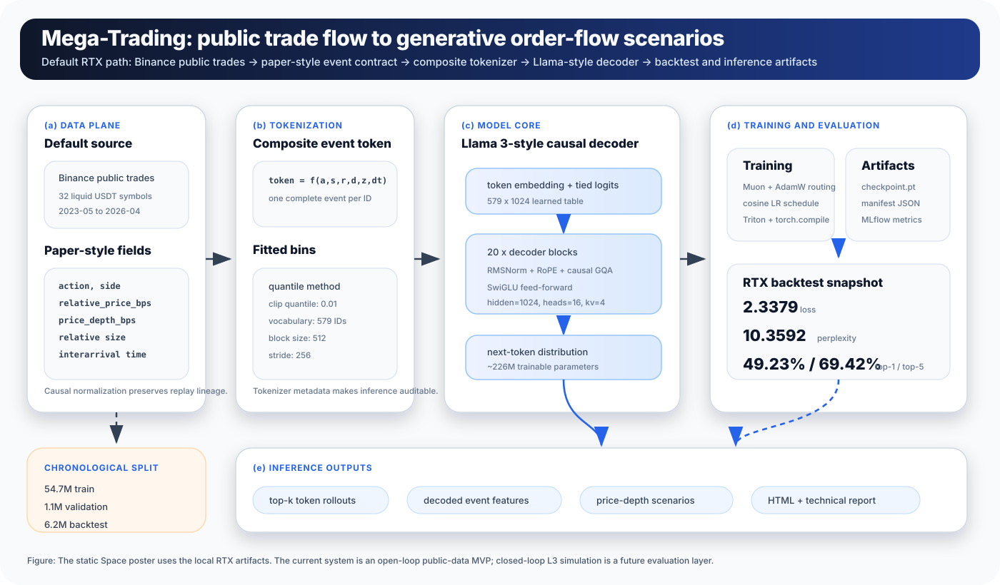
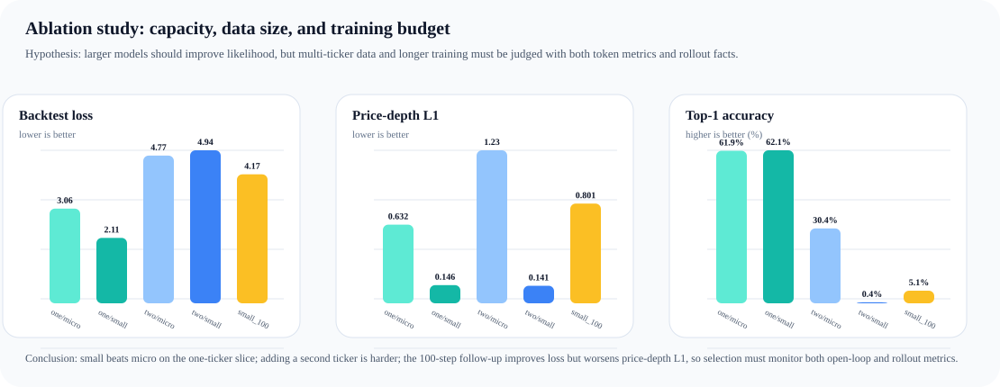

System Architecture
Public Binance trade data is converted into discrete event tokens, modeled with a compact Llama-style decoder, and evaluated on chronological holdout data.

Generative order-flow modeling from public market data.
Mega-Trading asks a simple question: can market events be modeled like language tokens? It converts public Binance trade data into discrete event tokens, trains a compact Llama-style decoder, and compares predictions and generated event statistics against held-out chronological data.
Teacher-forced next-token loss on held-out chronological tokens.
exp(loss), capped in code to avoid overflow.
Token accuracy over 524,288 scored tokens.
Last submitted metric window, 111K tok/s over the last 50 points.
Take-Home Scope
The assignment was intentionally open-ended: build a non-trivial system, define the problem, decide what success means, and show how far the implementation goes. Mega-Trading frames that requirement as an end-to-end system for generative market-event modeling.
What I chose to build
A public-data prototype that treats market events like language tokens: ingest Binance trades, tokenize events, train a Transformer, evaluate predictions, and package the result as a reviewer-facing report.
End-to-End System
The project covers data ingestion, feature engineering, tokenizer fitting, dataset splits, model architecture, distributed-ready training, MLflow tracking, backtesting, generated-event analysis, and static deployment artifacts.
Success Criteria
Success is not only model accuracy. It includes reproducible data lineage, held-out chronological evaluation, baseline comparisons, training throughput, readable artifacts, and clear limitations for the next iteration.
Version Control and Evidence
Version control review stays simple because configs, source code, tests, reports, and generated space assets are separated. The showcase artifacts are covered by tests so the presentation stays tied to real metrics instead of hand-written claims.
Motivation and Fit
I chose this project because Deeter Analytics focuses on turning market data into decisive action, and my background is building end-to-end foundation-model systems with researchers and production teams.
Company context
Deeter Analytics describes its mission as transforming complex market data into actionable insights with clarity, precision, and transparent methodology. This project targets the same problem shape: convert noisy market data into measurable model outputs that can support downstream decisions. Company site.
My background
I work as a research engineer on end-to-end model systems, partnering with researchers to move models from experiments into production. My current work on Amazon Nova foundation models shaped the choice to build a real data-to-training-to-evaluation pipeline instead of a narrow demo.
Why this project
A market-event foundation-model prototype lets me show the skills the take-home prompt is trying to reveal: problem framing, data processing, model implementation, training infrastructure, optimization, evaluation, and reviewable artifacts.
System Story
Public trades
Binance public archives provide downloadable historical trades.
Event fields
Each event keeps direction, relative price, depth, size, and elapsed time.
Event token
Quantile buckets turn each event into one integer token ID.
Decoder model
A Llama-style causal Transformer learns next-token probabilities.
Backtest
Held-out chronological slices measure loss, perplexity, and top-k accuracy.
Rollout facts
Generated price-depth tokens are compared with real held-out distributions.
Dataset Evidence
Chronological split
Prepared from 62,012,828 total token windows: train 54,695,345, validation 1,116,216, and backtest 6,201,267. Validation and backtest are held out by ticker chronology.
Symbol coverage
32 USDT symbols, 1096 symbol-month partitions, 2023-05 through 2026-04. Top symbols dominate sequence volume, as expected for liquid public spot trades.
Model Architecture
Why one token per event?
Each market event is encoded as one integer token, similar to how an LLM encodes text. This makes the task easy to explain: given recent events, predict the next event.
Why Llama 3-style?
The decoder uses standard modern LLM components: RoPE, RMSNorm, grouped-query attention, SwiGLU, and tied embeddings. The report cites Llama and Transformer references for this choice.
Why this model size?
The submitted baseline uses 20 layers, hidden size 1024, 16 attention heads, and 4 KV heads: about 226.1M trainable parameters. It is large enough to exercise a real Transformer pipeline, but small enough for one high-memory GPU.
Why GQA and RoPE?
Grouped-query attention lowers KV projection cost while preserving multiple query heads. RoPE avoids learned absolute tables and works naturally with fixed 512-token causal windows.
| Component | Submitted value | Reason |
|---|---|---|
| Vocabulary | 579 realized tokens | Fitted quantile buckets over action, side, price/depth, size, and time plus special tokens. |
| Context | block_size=512, stride=256 | Balances event context with large sample count and tractable attention cost. |
| Attention | heads=16, kv_heads=4, backend=triton | GQA plus local fused causal attention for GPU efficiency. |
| Feed-forward | SwiGLU intermediate_dim=2816 | Llama-family FFN ratio, rounded to hardware-friendly width. |
| Dropout | 0.0 | The Triton fused attention path currently targets no-dropout causal GQA. |
Training System
Loss curves
Final train loss 3.3414, validation loss 2.3500. The backtest loss is 2.3379.
Optimization throughput
Preloaded NumPy arrays, pinned workers, non-blocking transfer, torch.compile, and Triton attention reduce data-wait and kernel overhead after warmup.
Engineering Design Evidence
The repository includes design and profiling documents that make the implementation reviewable beyond the final metrics. These documents show how data contracts, kernels, training configs, profiling, and distributed execution were reasoned about.
Data plane design
docs/data-plane-design.md defines the raw Binance trade path, bounded-memory streaming prepare, tokenizer artifacts, and chronological split contract. This is the lineage layer behind every reported metric.
Training plane design
docs/training-plane-design.md records the training inputs, checkpoint/manifest outputs, DDP/FSDP-ready execution, and backtest handoff. It shows how data, model, metrics, and evaluation are kept consistent.
Custom kernels
docs/kernels.md documents the Triton causal GQA attention path. The RTX-shape bf16 forward benchmark reports 156.23 approximate TFLOP/s vs 148.49 for PyTorch SDPA; backward is correct but still bottlenecked by dK/dV register pressure.
Performance profiling
docs/performance-profiling.md captures an end-to-end PyTorch profiler investigation. The baseline CPU optimizer window was 323.645 ms over two optimizer updates; after shape-bucketed Muon and ns_steps=3 it dropped to about 20.018 ms.
Training configs
docs/training-configs.md explains Mac, RTX, Modal, and default environments. The same project can run a smoke test, single-server CUDA training, or Modal GPU training through config-driven entry points.
Systems alignment
docs/training-systems-alignment.md maps the project to training-system concerns: throughput, GPU utilization, memory pressure, I/O bottlenecks, checkpoint reliability, failure recovery, and learning per unit of compute.
Ablation Study
The ablation pass turns engineering choices into testable hypotheses: capacity should help on a fixed slice, adding tickers should increase difficulty at the same budget, and longer training should be judged by both likelihood and rollout realism.
Hypotheses
- Model capacity: small should beat micro on the same one-ticker data.
- Data size: two tickers should be harder than one at 20 steps.
- Training budget: 100 steps should improve likelihood, but not necessarily generated-event quality.
Probe: BTCUSDT and ETHUSDT, April 2026, block_size=128, stride=4096, 16 backtest batches, 5 decoded examples per run.
Conclusions
The cleanest result is capacity: one-ticker small improves backtest loss from 3.060 to 2.114 and price-depth L1 from 0.632 to 0.146. Multi-ticker training is harder: token accuracy can collapse even when marginal rollout statistics look plausible. The 100-step follow-up improves loss but worsens L1, so future selection needs both open-loop and rollout gates.

| Data | Model | Steps | Train loss | Val loss | Backtest loss | Top-1 | Top-5 | Price-depth L1 |
|---|---|---|---|---|---|---|---|---|
| 1 ticker | micro | 20 | 3.410 | 2.915 | 3.060 | 0.619 | 0.790 | 0.632 |
| 1 ticker | small | 20 | 2.580 | 1.922 | 2.114 | 0.621 | 0.802 | 0.146 |
| 2 tickers | micro | 20 | 3.675 | 4.773 | 4.771 | 0.304 | 0.597 | 1.229 |
| 2 tickers | small | 20 | 2.797 | 4.990 | 4.943 | 0.004 | 0.111 | 0.141 |
| 2 tickers | small | 100 | 1.457 | 4.152 | 4.166 | 0.051 | 0.161 | 0.801 |
Optimization Stack
Optimizer
Muon + AdamW routing applies Muon to large matrix parameters while preserving AdamW behavior for embeddings and tied output weights. Momentum=0.95, Newton-Schulz steps=5.
Schedule
Cosine LR with 125 warmup steps and min LR 2e-05. This keeps the early fused-kernel run stable and avoids an abrupt final LR drop.
Data path
Streaming prepare fits tokenizer samples, writes partitioned NumPy token streams, then training preloads arrays and overlaps workers with GPU compute.
Observability
MLflow stores the experiment history: 9 runs, 596,177 metric rows, 273 params, and 72 tags in the local tracking database.
Backtest and Stylized Facts
Generated vs real event facts
The model tracks mean price-depth direction reasonably, but generated kurtosis remains much higher than real held-out backtest depth. That is a useful target for future sampling and data improvements.
Submitted baseline
| Run | Train seq | Vocab | Loss | PPL | Top-1 | Top-5 | L1 |
|---|---|---|---|---|---|---|---|
| single-GPU baseline | 54,695,345 | 579 | 2.3379 | 10.3592 | 49.23% | 69.42% | 0.1420 |
This is the submitted baseline used for the poster and technical report.
Important limitation: this repo reports open-loop chronological backtest loss and rollout-vs-real stylized facts. The TradeFM-inspired closed-loop market simulator for fill validation, impact, stress tests, and optimal-execution agents is not implemented yet.
Baseline Sanity Check
Uniform random is not the right comparator
With 579 realized token IDs, uniform random top-1 is only 0.17% and uniform random top-5 is 0.86%. The reported model top-1 of 49.23% is far above that.
Token imbalance is the real concern
The scored backtest sample has only 135 unique labels and an effective vocabulary of about 19.56. A cheating backtest majority-token baseline would already get 25.41% top-1.
Simple temporal baselines
Copying the previous token gets 33.63%. A train-sample one-step Markov argmax baseline gets 31.91% on the same scored sample. The model still clears both, but this is the comparison the report should emphasize.
Inference Path
Load
Read the trained checkpoint, tokenizer metadata, and token profile. Validate vocab size and context length before scoring or rollout.
Condition
Use a recent event-token window from a ticker stream, or start from a beginning-of-sequence seed. The model consumes token IDs and keeps the latest 512 events as context.
Generate
TradingModel.generate applies top-k sampling, default top_k=16, and appends sampled event tokens one step at a time.
Decode
Token IDs decode back into event features; price-depth bps can be accumulated into model-implied price paths for charting and downstream simulation.
Future Direction
Multimodal
Add news, filings, macro calendar events, funding/flows, and social sentiment as time-aligned conditioning streams. The goal is not text generation, but event-flow generation conditioned on exogenous market context.
L3 Data
Replace public trade-only proxies with participant-observable L3 add/delete/modify events, true best bid/ask midprice, queue position, and order lifecycle features.
Closed-loop simulator
Route generated order-flow through a deterministic matching or LOB simulator to evaluate fills, slippage, market impact, liquidity shocks, and execution policies.
Inference service
Package checkpoint + tokenizer + manifest as a reproducible model card artifact, expose batched rollout APIs, and attach provenance to every generated scenario.
Reference Frame
TradeFM
The project is motivated by TradeFM's framing of market microstructure as a generative foundation-model problem, while using a smaller public-data prototype. See arXiv:2602.23784.
Llama and LLMs
The model follows the decoder-only next-token prediction pattern used by modern LLMs and Llama-style architectures. See Llama 3 and Attention Is All You Need.
Data and Systems
Input data comes from Binance Public Data. GPU acceleration uses a Triton attention path where available; see Triton.
Reproducibility Artifacts
| Artifact | Path | Use |
|---|---|---|
| Static overview | huggingface-space/index.html | Reviewer-facing project summary and key evidence. |
| Source repository | github.com/duoan/mega-trading | GitHub repository with source code, configs, tests, docs, and generated showcase artifacts. |
| Technical report PDF | huggingface-space/technical-report.pdf | Reviewer-facing compiled report hosted from the GitHub repository. |
| Technical report source | huggingface-space/technical-report.tex | LaTeX source with methods, config rationale, metrics, limitations, and roadmap. |
| Backtest dashboard | huggingface-space/backtest-report-rtx.html | Training curves, split chart, candles, forecast paths, and metrics. |
| Backtest JSON | .mega-trading/data/evals/rtx/backtest.json | Source of backtest loss, top-k accuracy, and stylized facts. |
| MLflow DB | .mega-trading/data/runs/mlflow/mlflow.db | Training and evaluation metrics for local experiment tracking. |